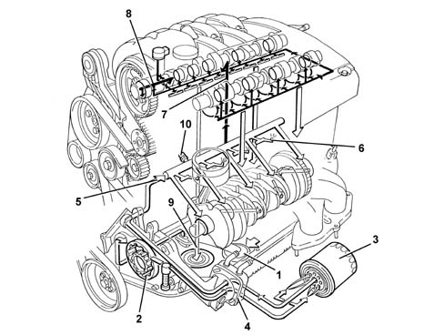

INTRODUCTION - ENGINE LUBRICATION
- Path
- Descriptions > 10 ENGINE UNIT > 1084 ENGINE LUBRICATION SYSTEM > INTRODUCTION - ENGINE LUBRICATION
- Kind
- system description
- Applies to
- engines: 1.8 T.SPARK; all production periods
- Interactive page
- https://sloeber94.github.io/elrnDB-aGt/en/#/125000307
Applies to: engines: 1.8 T.SPARK; all production periods
CONSTRUCTION SPECIFICATIONS
ENGINE LUBRICATION SYSTEM

1. Suction head with filter mesh
2. Oil pump
3. Oil filter cartridge
4. Water/oil heat exchanger
5. Main longitudinal duct
6. Jets (piston skirt cooling)
7. Camshaft supports vertical channels
8. Variable valve timing actuation channels
9. Oil falling back into sump
10. Switch for engine oil pressure warning light